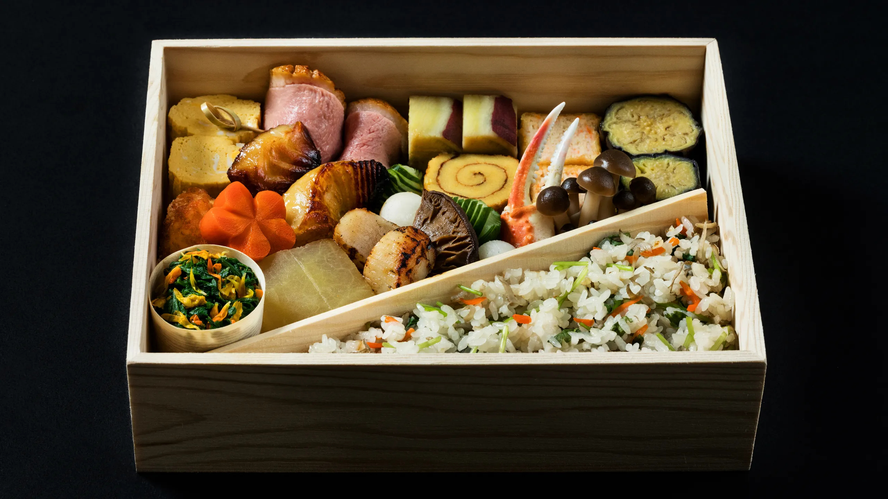
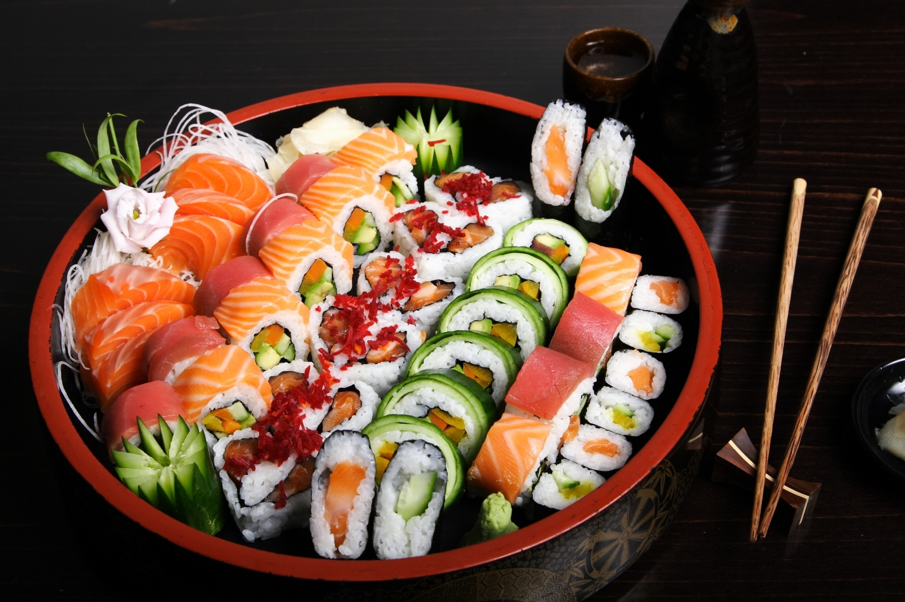

Traditional Bento Box
A bento, or obento, is a single-portion take-out or
home-packed meal, often for lunch.
Food

Sushi
Sushi is one of Japan's most iconic and popular dishes,
known worldwide for its simplicity, freshness, and artistry.
It consists primarily of rice paired with various ingredients,
including raw or cooked seafood, vegetables, and sometimes tropical fruits.
Sushi can be served in several forms, with some of the most common types being:
Nigiri: Hand-pressed rice topped with a slice of seafood or fish, like tuna, salmon, or shrimp.
Maki: Sushi rice and fillings rolled in a sheet of seaweed (nori) and sliced into bite-sized pieces.
Sashimi: Thinly sliced raw fish served without rice, typically paired with soy sauce and wasabi.
Temaki: A hand-rolled cone of seaweed filled with sushi rice, seafood, and vegetables.
Sushi is often accompanied by soy sauce for dipping, wasabi for a spicy kick,
and pickled ginger (gari) to cleanse the palate between bites. The dish is celebrated for its balance of flavors,
textures, and freshness, and it highlights the importance of seasonality and presentation in Japanese cuihsine.
Okonomiyaki is a popular Japanese savory pancake, especially in the Kansai and Hiroshima regions,
made from a batter of flour, eggs, and water or dashi, mixed with ingredients like shredded cabbage,
pork, or seafood. In Osaka-style, all ingredients are mixed into the batter, while in Hiroshima-style,
they are layered, often with yakisoba noodles. The cooked pancake is topped with okonomiyaki sauce,
mayonnaise, dried bonito flakes, and seaweed flakes. The name "okonomiyaki" means "grill as you like,"
reflecting its versatility, and it's often cooked on a communal hot plate, making it a fun, customizable meal.
Onigiri, also known as rice balls, is a traditional Japanese snack made from plain or lightly seasoned rice,
shaped into a triangle, ball, or cylinder, and often wrapped in a sheet of seaweed (nori).
It is typically filled with various ingredients such as salted salmon, pickled plum (umeboshi), tuna with mayonnaise,
or other savory fillings. Onigiri is easy to carry and convenient to eat, making it a popular choice for picnics, school lunches,
and quick meals on the go. Unlike sushi, the rice used in onigiri is not vinegared, and it is primarily flavored with a touch of salt.
It is a simple, versatile dish that showcases the importance of rice in Japanese cuisine.
Sukiyaki is a traditional Japanese hot pot dish that is typically prepared and enjoyed at the table, making it a social and communal meal.
It consists of thinly sliced beef cooked in a sweet and savory broth made from soy sauce, sugar, and mirin. Vegetables like napa cabbage, mushrooms, tofu,
and shirataki noodles (made from konjac) are added to the pot and simmered together with the beef. The ingredients are usually cooked in a shallow iron pot and served with a side of raw,
beaten egg, into which diners dip the cooked beef and vegetables before eating. Sukiyaki is especially popular during the colder months and is a comforting,
hearty meal that showcases the balance of flavors in Japanese cuisine.
Tempura is a classic Japanese dish consisting of seafood, vegetables,
or other ingredients that are lightly battered and deep-fried to create a crispy, golden coating.
The batter is typically made from a simple mix of cold water, flour, and sometimes egg, ensuring a light and airy texture.
Common tempura ingredients include shrimp, squid, and a variety of vegetables like sweet potatoes, eggplant, and bell peppers.
Tempura is usually served with a dipping sauce called tentsuyu, made from dashi, soy sauce, and mirin, and is often accompanied by grated daikon radish.
The dish is known for its delicate, non-greasy crunch and is a popular item in Japanese cuisine, highlighting the technique of frying without overpowering the natural flavors of the ingredients.